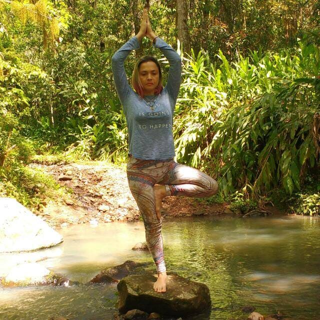

Yoga é uma filosofia que tem sua origem na Índia, há mais de 5000 anos, e atualmente é conhecida não apenas como uma filosofia de vida, mas também como sistema holístico que trabalha o corpo e a mente ao mesmo tempo.
A yoga trabalha as emoções, ajuda as pessoas a agir de acordo com seus pensamentos e sentimentos, além de trazer um profundo relaxamento, concentração, tranqüilidade mental, fortalecimento do corpo físico e o desenvolvimento da flexibilidade. Existem diversos ramos do Yoga, aqui no Studio Harmonia disponibilizamos o Vinyasa Yoga e o Tantra Yoga.
Laliita
a

Formação em Tantra Yoga no Instituto Anandam, Yoga e Cultura, especialização em Anatomia Vivencial, especialista em yoga para crianças pelo Centro Ananda Marga Porto Alegre. É uma das organizadoras do Festival Internacional de Yoga pela Ananda Marga.
Sabrina
v
Iniciou sua prática de yoga e meditação em 2004 e hoje é instrutora certificada em Tantra Yoga pela Ananda Marga. Desde 2014, trabalha com o ensino e difusão do yoga como filosofia e prática integrativa que traz benefícios físicos, energéticos e mentais - seja o aluno experiente ou iniciante.
Fabiana
f
Educadora Física formada em Hatha vinyasa yoga pela professora Jamile Ansolin, especialização em yoga para gestantes pelo Nilaya yoga, cursando terapia Ayurvédica pela escola de yoga Brahma Vidyalaya.